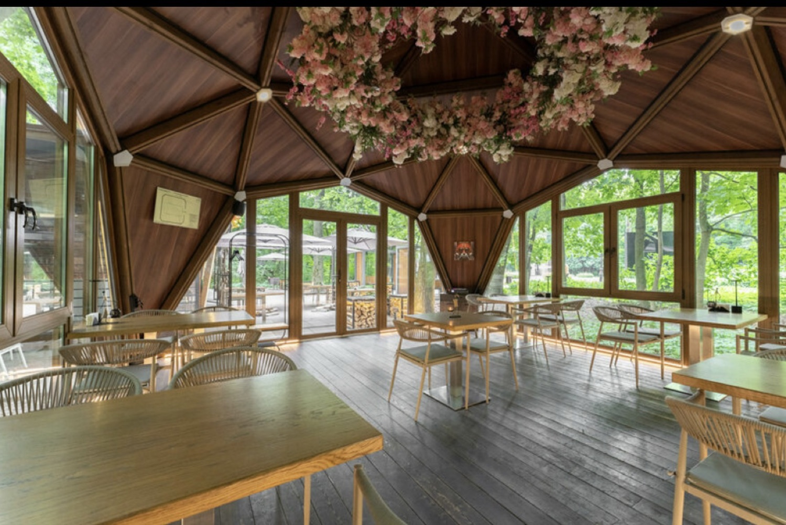
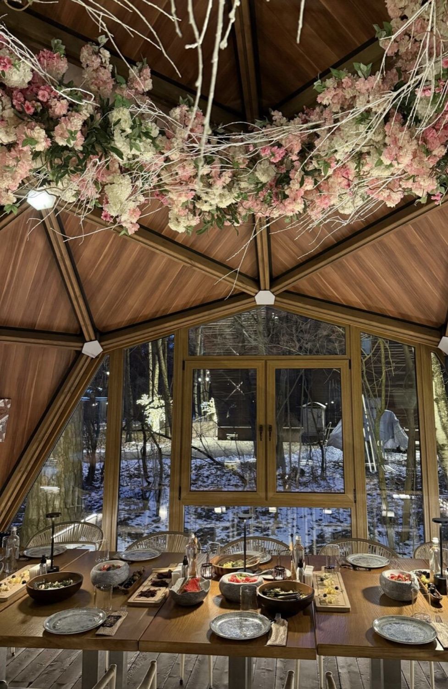
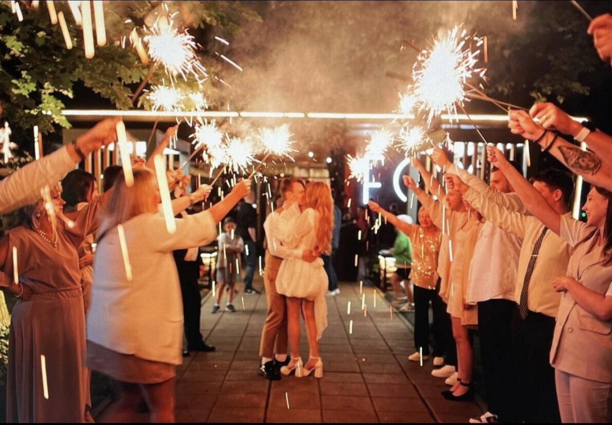
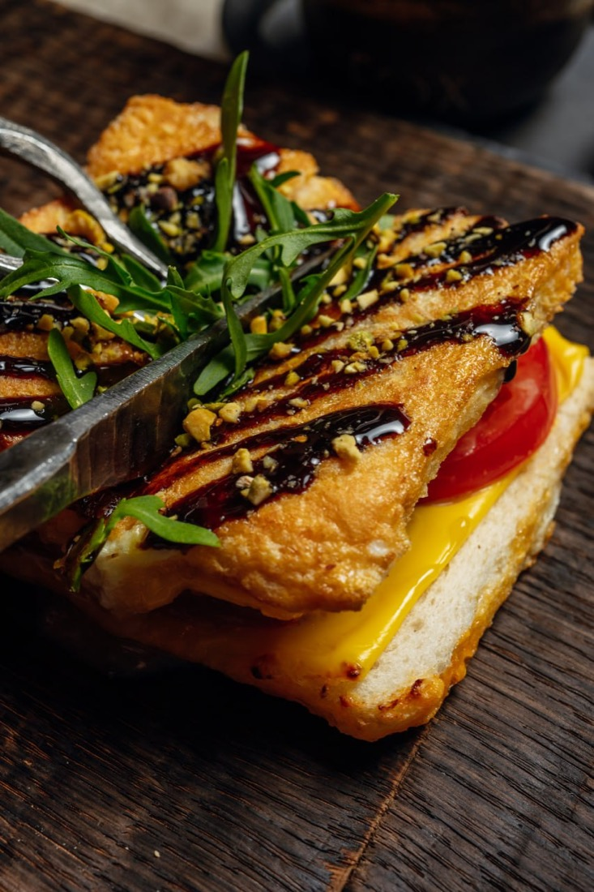

150м² зал
40гостей
400 000 ₽депозит от
Просторный зал с панорамными окнами в лес и welcome-зоной для встречи гостей. Идеален для банкетов, фуршетов, свадеб и презентаций.


Банкеты, свадьбы, дни рождения и корпоративы у живого очага, среди леса Филёвского парка. Полный сервис под ключ — от декора до авторского меню бренд-шефа Бисо Чеченова.
Оставить заявку на банкетПросторный зал с панорамными окнами в лес и welcome-зоной для встречи гостей. Идеален для банкетов, фуршетов, свадеб и презентаций.

Стеклянный геокупол среди деревьев — отдельное камерное пространство с панорамными окнами и цветочным сводом. Свадьбы, дни рождения, семейные торжества и деловые встречи в любое время года.


Работаем с проверенными подрядчиками. Вам остаётся только прийти и наслаждаться праздником.
Стильное оформление и живые цветы под концепцию вашего праздника.
Создадим атмосферу, музыку и драйв — от тихого вечера до большого банкета.
Запечатлеем ключевые моменты, чтобы праздник остался с вами навсегда.
Авторский торт на заказ — по вашим пожеланиям, вкусу и стилю события.

Бенгальские огни под звёздами, лес вокруг и тёплый свет FO'X. Мы создаём праздник, который ваши гости будут вспоминать годами.
Обсудить свадьбу



Дегустация в подарок при заказе банкета. Мы знаем, как важно убедиться в качестве, поэтому приглашаем вас своими глазами посмотреть на наш ресторан, прочувствовать наш сервис и насладиться нашей кухней — ещё до праздника.
Записаться на дегустациюДегустация предоставляется при заказе банкета